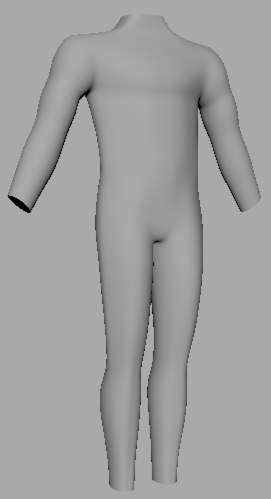

progress as of december the 28 ><> ><>
progress as of december the 21 -_-

progress as of december the 10 c[_]
progress as of november the 16 ¯\_(ツ)_/¯
progress as of november the 12 :D
I pull in image files when I model in Maya. I posted these videos to remind myself how. The chicken is not amused...
Setting up the image files
Model the torso front
Model the torso side
Return to a less perilous land
Copyright www.nesproductions.com. All material included in this website is, unless otherwise stated, the property of www.nesproductions.com. Copyright and other intellectual property laws protect these materials. Reproduction or retransmission of the materials, in whole or in part, in any manner, without the prior written consent of the copyright holder, is a violation of copyright law.